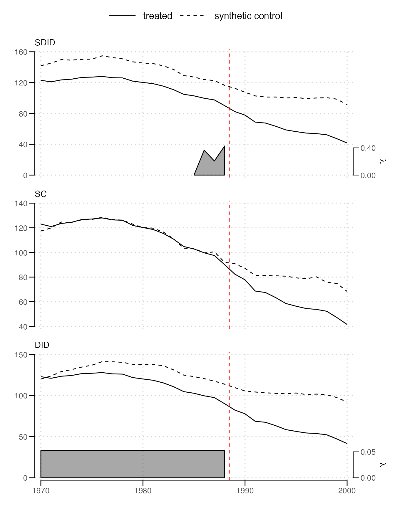

Arkhangelsky et al. (2021) introduce synthetic difference-in-differences with the effect of California’s Proposition 99, a 1988 increase in the tobacco tax, on cigarette sales, using the panel of Abadie, Diamond and Hainmueller (2010) of 39 states from 1970 to 2000. They compare it with synthetic control and difference-in-differences, reporting an effect of -15.6 packs per capita for synthetic difference-in-differences. This vignette repeats the comparison.
library(sdid)
data(california_prop99)
estimate = function(method) {
sdid(california_prop99, "PacksPerCapita", "State", "Year", "treated",
method = method, vce = "placebo", reps = 200, seed = 1213,
graph = FALSE, quietly = TRUE)
}
fits = list(SDID = estimate("sdid"), SC = estimate("sc"), DID = estimate("did"))
data.frame(
estimate = sapply(fits, function(f) unname(coef(f))),
se = sapply(fits, function(f) f$se),
lower = sapply(fits, function(f) f$conf.int[1]),
upper = sapply(fits, function(f) f$conf.int[2])
)
#> estimate se lower upper
#> SDID -15.60383 9.132706 -33.50360 2.29594751
#> SC -19.61966 10.017681 -39.25396 0.01462972
#> DID -27.34911 17.049543 -60.76560 6.06737857The standard errors come from 200 placebo replications, as California is the only treated state, and vary somewhat with the number of replications and the seed.
The three estimators differ in their weights. Difference-in-differences weighs every control state and every pre-treatment year equally, so its comparison assumes California’s trend matches the average state’s. Synthetic control chooses states whose weighted average matches California’s level and path before 1989, with no weight on the pre-treatment years, so it compares 1989 to 2000 with no baseline. Synthetic difference-in-differences chooses states that match California’s trend up to a constant gap, and pre-treatment years that resemble the treated period, here 1986 to 1988.
sdid_plot(fits)
Difference-in-differences’ average state follows a different path from California before 1989, which the weighting of the other two corrects. Synthetic control’s states track California’s level closely. Synthetic difference-in-differences’ states run parallel to it at a gap.
References
Abadie, A., Diamond, A., and Hainmueller, J. (2010). Synthetic Control Methods for Comparative Case Studies. Journal of the American Statistical Association 105(490), 493-505.
Arkhangelsky, D., Athey, S., Hirshberg, D. A., Imbens, G. W., and Wager, S. (2021). Synthetic Difference-in-Differences. American Economic Review 111(12), 4088-4118.